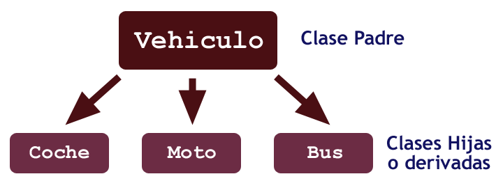

Punto 1
¿Que es el Poliformismo?
El polimorfismo en programación es un concepto que se refiere a la capacidad de un objeto para tomar varias formas o comportarse de diferentes maneras según el contexto en el que se utiliza. Esto significa que un mismo método o función puede comportarse de manera distinta dependiendo del tipo de objeto al que se aplica.
|
 |
Punto 4
¿Que es la sobreescritura de metodos?
La sobreescritura de métodos es un concepto fundamental en la programación orientada a objetos que permite a una clase hija proporcionar una implementación específica para un método que ha heredado de su clase padre. Esto significa que la clase hija puede redefinir (o sobrescribir) el comportamiento de un método de la clase padre para adaptarlo a sus propias necesidades.
Cuando una clase hija sobrescribe un método de la clase padre, la firma del método (nombre, tipo de retorno y lista de parámetros) debe ser la misma que la del método original en la clase padre. La clase hija puede modificar el comportamiento del método o agregar funcionalidad adicional, pero debe mantener la misma firma para garantizar la coherencia y compatibilidad con el polimorfismo.
Aqui un ejemplo:
 |